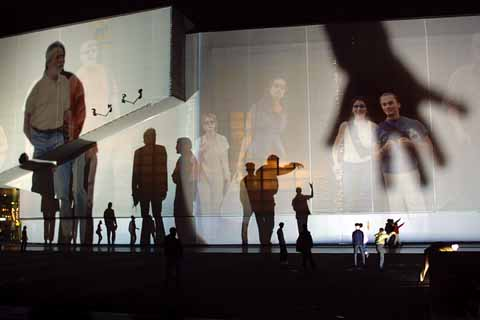
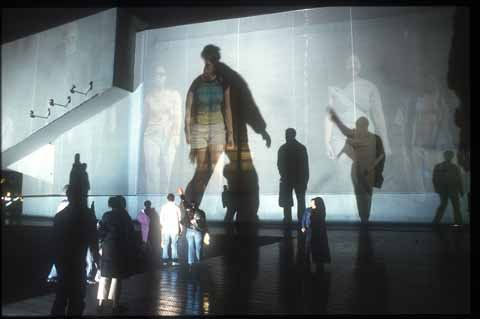
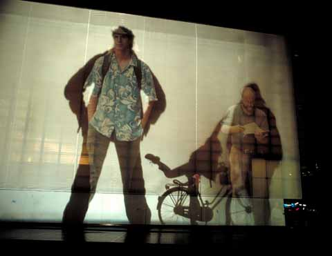

|
The thing about collaboration, is that it can be really, really difficult. Especially in cultures where the only models on sale are the lonesome hero or the corporate machine.
Argument as exhibit
There's something about curators which means that arguing tends to be one of their talents. Jon Ippolito, a Guggenheim curator, also makes artwork with a small group of people; artwork named, for reasons which are obvious, Adversarial Collaborations. In a way, the argument became the artwork. In another way, the argument might become the exhibition. The exhibition 010101 at SFMOMA, for example, was unusual for a 'new media' show, having involved curators across the Painting and Sculpture, Architecture and Design, Media Arts and Education departments. The "interesting discussions" that ensued may have inevitably thrown some spanners in the institutional works, but also gave birth to a struggling child, which refused to sit quietly in the Turing-land corner of 'Tech Art'. Argument can produce change, and hybrid vigor, but it's also a lot of work.
Several new media art curators have caught the zeitgeist by being more open than might be expected about the sheer difficulties involved, and curators like Christiane Paul and Steve Dietz are generously prepared to share the knowledge in the restless land of discussion lists. We collaborate, sometimes, because we need to, and because we know we can't do it alone.
If we care to get etymological about it, then curators were perhaps originally the humble curates; taking care of their flock of artists and audience, making sure that the mice don't eat the altarpieces, and seeing that there are enough hymn books to go round. But then, there is also the promotional allure of the priest, who gets to pontificate from the pulpit on life and death, and to wear much fancier costumes.
Do we want our curators to be priests or curates? The audience may not actually care how many curators put together the exhibition, or what the curatorial vision was (but might want well-lit art that hasn't been eaten by mice). If you're thinking about new media, then the audience may not actually care to choose alternative endings for a narrative (but might want a story that's well told). It very much depends on the audience.
Computers didn't invent collaboration (or artist/curators)
Natalie Bookchin is right to make the strong link between art activism of the 1960s+, and new media debates about audience, collaborations, and 'new relationships'. In the UK, many collaborations between artists, curators and audiences were forged in the 'community art' of the 1970-80s, and more recently, arts organizing groups such as Fine Rats International have staged arts events which necessarily developed a more active relationship between curators and audiences. Younger bearers of the collaboration torch in the prankster mold were The Leeds 13. This group of art students had 15 minutes of fame in the tabloid press for staging their final year exhibition opening at an airport, and emerging to announce that they had spent their exhibition grant money on a Spanish holiday. After predictable press outrage, they then revealed that their holiday snapshots were in fact faked locally (without Photoshop), and that their tans were also fake. The only problem that their professor faced was how to award a collective pass mark to the group, as rules said that they should be marked separately.
What new media seems to have done to these approaches, is demand an even broader skill base from conscientious curators/artists. Iliyana Nedkova has spoken eloquently of the challenges of cross-cultural art projects that involve "blind dating technology". What you need, she concludes, is a very good network of friends. The sheer variety of skills needed across 'new media' also seems to have led artists to successfully collaborate in groups such as KIT and BIT, or partnerships such as Thomson & Craighead, or Nina Pope and Karen Guthrie. For the latter pair, even this simple model however, seems to have caused problems for the 'single hero' mindset of some art museums. At a recent seminar, they asked "How difficult is it to put two peoples' names on something - is it really that big a deal?"
Collaboration between who?
As Lev Manovich points out, much of the early "myth of interactivity" was based on exaggerated claims that the author and the user of an artwork were somehow 'collaborating'. Whilst a user and an interactive computer-based artwork can have exchanges of some complexity, what they can't have is a developing argument. To use this dialogic metaphor further - what you can have is decent 'voicemail', what you can't have is a good 'conversation'.1 Despite being "immanent" for many decades, Artificial Intelligence as defined by the Turing Test has failed to arrive. Reading the transcripts on The Loebner Prize web site illustrates that although you might be fooled for a few exchanges between a human and a computer, very quickly something goes seriously awry, and computers turn out to be conversationalists only of the most deranged, boorish or egomaniacal kind.
It has, perhaps, been artists rather than theorists or curators who twigged this big limitation first, and who decided to sidestep the problem most creatively.
"It's a humbling affair" (Rafael Lozano-Hemmer)
Collaboration between who? Between the users/audience. They are real people and can have real conversations. So what is the artist doing? Well, as people in art galleries are rather unlikely to spontaneously strike up conversations with strangers (especially in Anglo cultures) then the artist (or programmed artwork) is acting as a graceful party host. The artist plans the icebreakers, sets the tone, makes the introductions and encourages collaboration, before stepping aside saying "my work here is done" (a little, perhaps, like the curate-style curator?)
Artists, of course, can use the visual or aural rather than the literal conversation. Toshio Iwai's elegant 1994 audio art game Resonance of 4, enables four users to make four different kinds of sound pattern. Iwai's program ensures that it never sounds terrible, but encourages people to collaborate to make it sound better. Even reserved Brits and Japanese get to 'converse' in the wordless darkness, elaborating their responses to each other.
Body Movies, Relational Architecture 6 by Rafael Lozano-Hemmer allows for even more freeform collaboration, and happens in a less controllable pubic space. In a public square in The Netherlands, deep-focus bright spotlights burn out the underlying digital image projections of human figures, apart from where the silhouettes of live people create a shadow. If enough people collaborate to cover the digital images, then more images appear. Some people did that - others also used it for that range of interactions that people are heir to: flirting, shadow violence, the usual cheerful obscenity, collaboration, and creativity of unpredictable varieties. According to Lozano-Hemmer, a certain amount of self- policing collaboration occasionally took place: should any group of adolescent boys become too boringly aggressive or obscene, other people could band together to block out their light. Handing over such a large amount of control to the audience is, the artist says, "a humbling affair". For curators, it is also no doubt a worrying affair - they may be used to people pushing buttons in galleries, and only mildly vexed by users surfing porn when they should be looking at net.art, but the idea of the audience collaborating amongst themselves smells of possible mutiny. The denizens are getting restless, and the rivets may not hold. To some, it also smells of populism, and may be relegated to the 'children's hour' ...
Lozano-Hemmer and Perry Hoberman are both artists noted for encouraging interaction between audience members, and were speaking at a conference organized by the National Museum of Photography Film and Television in the UK, which is noted for its educational exhibits as well its galleries. There was some debate at this conference as to the reasons why many fine art museums had chosen to so quickly embrace the idea that interactivity was a 'myth' and to remain firmly with the existing privileging of the single viewer model or the video-as-narrative model for new media. To use Manovich's bifurcation2: The 'more interactive' artworks have remained in the "Turing Land" of educational art-sci, whilst the 'less-interactive' (and less physical) varieties of net.art are now nestling comfortably in the "Duchamp-Land" of the art museum. Lozano-Hemmer testified to the difficulty of adapting a visual art institution to his "Alien Behavior" approach, and suggested that a 'performance' model, and public art curators, were much more useful for the particular difficulties of this kind of collaboration. They are also two fields which tend to have closer relationships with a demanding and unpredictable audience.
So, curates or priests? Artists or curators? And humility? The field of new media art is not famous for humility. In fact it's rather given to hype, and the God-like power of the machine. It's quite good at communication though, and with some luck, should be able to collaborate enough to create some interesting alien behavior.
-----
Footnotes:
1. These and others' categories of art interactivity are explored in more detail in my Ph.D. thesis: Graham, C. E. B.(1997) A study of audience relationships with interactive computer-based visual artworks in gallery settings, through observation, art practice, and curation. Unpub. Ph.D. thesis, University of Sunderland. Available from URL: http://www.sunderland.ac.uk/~as0bgr/phd.html.
2. Manovich, Lev (1996) The Death of Computer Art. [Online]. Available from URL: http://www-apparitions.ucsd.edu/~manovich/text/death.html OR http://www.thenetnet.com/schmeb/schmeb12.html.
-----
Images:
Body Movies, Relational Architecture 6
by Rafael Lozano-Hemmer



|